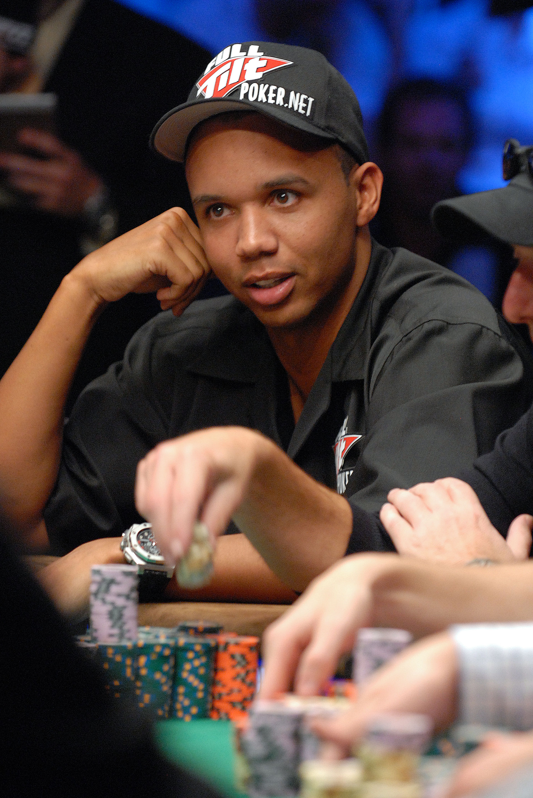
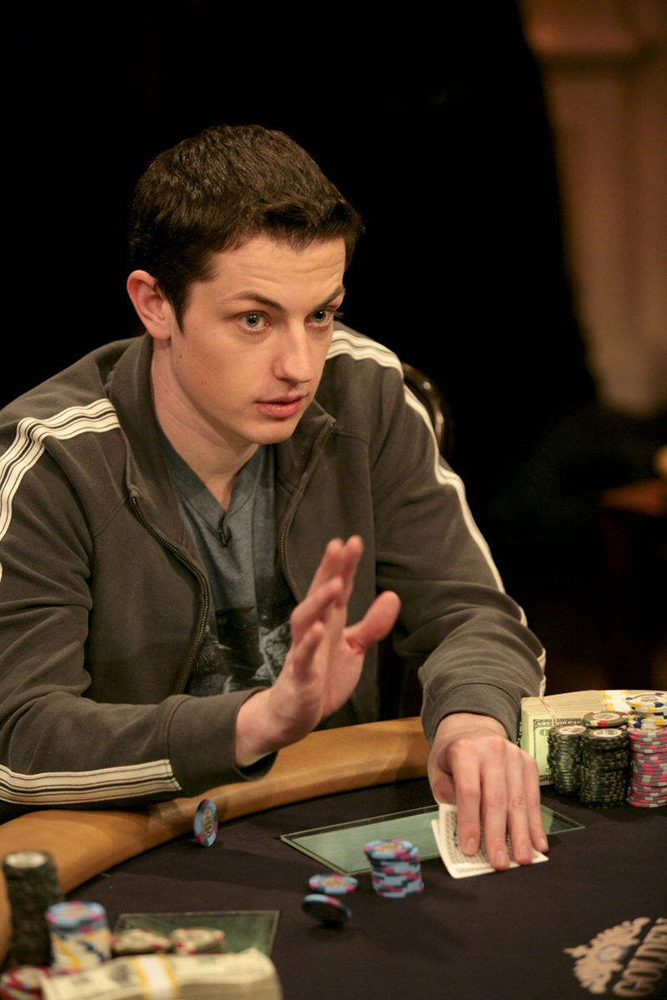

1985. december 13-án született Odenseben, Dániában.
A dániai Aarhus egyetemen kezdett gazdaságtant tanulni, de - mivel már a középiskola 5. osztályában High Stakes Cash Game-t játszottak iskolatársaival - pókerkarrierje miatt felfüggesztette tanulmányait. 2008-ban Peter volt minden idők legfiatalabb WSOP karkötő nyertese. Nem is akármilyen, hiszen a Main Event-et tudta abszolválni.
Gus Hansen
Gus "the great dane" Hansen dán teljes név: Gustav Hansen, (Koppenhága, 1974. február 13. –) profi pókerjátékos.
Első versenye profiként a 2002-es WPT $10K No-Limit Hold 'em típusú, Five Diamond World Poker Classic verseny volt, 556000 dollárt nyert. Szintén első lett a WPT L.A. Poker Classic $10K No-Limit Hold 'em Championship versenyen is, mellyel 532000 dollárt kaszírozott. 2003: a csak meghívásos Bad Boys of Poker versenyt nyerte meg, 25ezer dollárral. 2004: megnyerte negyedik World Poker Tour - címét a Caribbean Adventure-ön, 445ezer dollárt vitt haza. 2005: WPT Bay 101 Shooting Stars verseny 3. helyezés, 300ezer dollárnál is több nyereménnyel. 2007: Aussie Millons tízezer dolláros nevezési díjú versenyt nyerte, 1,5 millió dollárt vitt haza.
Daniel Negreanu
Daniel Negreanu a Team PokerStars Pro tagja, Kanadában született, de román gyökerei vannak, ugyanis szülei Romániából vándoroltak be a 60-as években.
2004 volt a legsikeresebb póker éve, amikor őt hirdették ki a WSOP év játékosa és Az év kártyajátékosa címmel. Azóta Daniel Negreanu összesen 4 WSOP karkötőt nyert, valamint 23 WSOP döntő asztali (beleértve 2 WSOP Europe-ot) és 47 fizetős helyezést ért el. Teljes WSOP nyereménye több mint 3.5 millió dollár.
Phil Ivey

Phillip D. Ivey 1976 február 1-én született Riverside-ban, Californiában, anyai nagyapja Bartul Zupan egy zadari születésű horvát férfi.
Bár Ivey elsősorban cash game játékosnak tartja magát, versenyeken is kimagasló eredményei vannak. 2002-ben három karkötőt nyert a WSOP-n - ennél többet egy évben soha senki sem tudott nyerni – és ezzel csatlakozott Phil Hellmuth-hoz, Ted Forresthez és Puggy Pearsonhoz, akiknek sikerült ugyanezt a bravúrt véghezvinni. Ivey Pot Limit Omahában is nyert két karkötőt, az elsőt 2000-ben, a másodikat 2005-ben. Öt WSOP győzelme mellett Ivey háromszor tudott bekerülni a Main Eventen a legjobb 25-be, volt 23., 20., egyszer pedig a tízedik helyig jutott.
Tom Dwan

Thomas Dwan Jr (beceneve: "durrrr") - profi amerikai pókerjátékos, 1986.07.30.-án született a New Jersey-i Edison városkában.
Fiatal kora ellenére máris rengeteg pénzt nyert, az új nemzedék egyik legtehetségesebb játékosának tartják. Dwan online pókerrel alapozta meg a hírnevét, durrrr néven a legnagyobb No limit Hold’em és Pot limit Omaha játékokban játszik nap mint nap.
Durrrr 17 évesen 50 $-ral kezdett játszani, először 5$-os sit&gókat, később már cash-game-ezett is. Kivételes tehetségével nagyon hamar feljebb jutott, hogy végül az 500-1000 $-os játékokban a legnagyobbakkal játszhasson. Dwan 2008-ban a FullTilten 5,36 millió dollárt nyert annak ellenére, hogy elveszítette az online póker történetének legnagyobb kasszáját: október 6-án 500-1000 $-os No limit Hold’em játékban KK-ja volt Urindanger AA-jával szemben, a kassza összege 723 938 dollár volt.